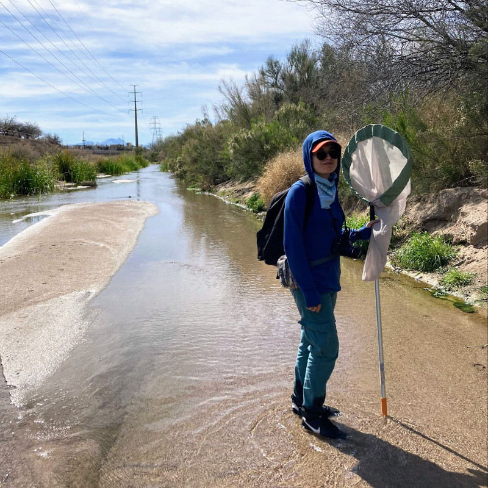

M. Sc. Rocío Jazmín Guzmán-Ojeda
I am an ecologist. My main interest is understanding how wildlife populations and communities are affected by disturbances in their ecological interactions, especially freshwater invertebrates, such as dragonflies and damselflies.Currently, I am a PhD student in Natural Resources (emphasis Wildlife Conservation and Management) in the Aquatic Ecology Lab at the University of Arizona. I'm part of the outreach efforts at the Santa Cruz River, including the Dragonfly Festival.
Education
- Master's in Biological Sciences. 2020. Biology Institute, National Autonomous University of Mexico (UNAM).
- Bachelor's in Ecology. 2016. State University of Sonora (UES).